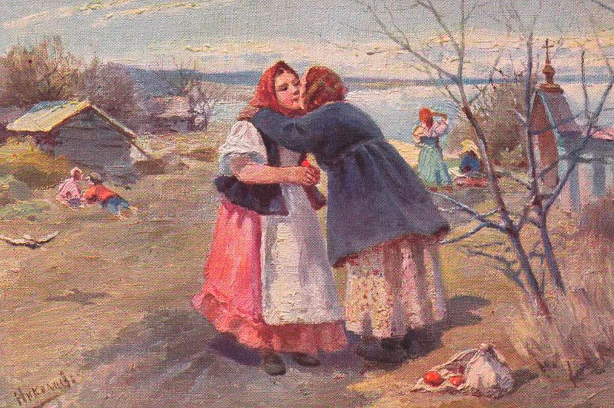
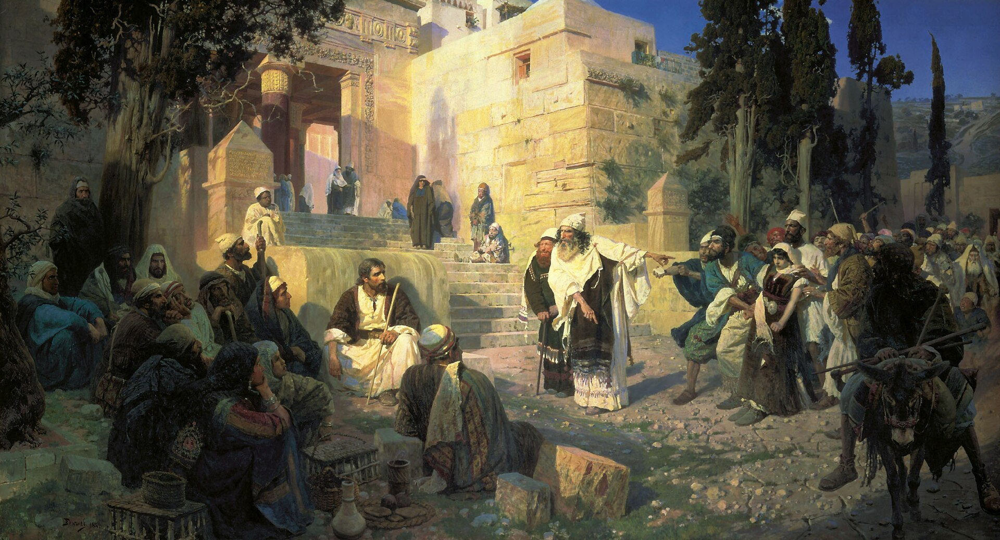

Forgiving

Forgiveness in Leo Tolstoy’s Anna Karenina is a recurring action central to the novel’s overarching theme: society’s judgment of adultery. The question of whether society should judge those who commit the sin of adultery is elicited from the novel’s epigraph to its conclusion. Thus, the acts of forgiveness by our protagonists are essential to understanding Tolstoy’s definition of true forgiveness and its consequences.
From the epigraph of Anna Karenina, which states, “Vengeance is mine; I will repay,” Tolstoy introduces the question of judgment, which many of his contemporaries were similarly concerned with. If interpreted through Romans 12:17–19 (which it draws on), the epigraph suggests that the judgment for sin should be left to God alone. The question of judgment elicits a tension between punishment and forgiveness; namely, if judgment lies outside society’s jurisdiction, then to what extent should society punish or forgive sinners? The struggle between punishment and forgiveness within the story is first depicted within the Oblonsky household. From the very first pages of the novel, we are made aware of Stiva’s infidelity. On the one hand, Dolly felt that “she had to do something to punish him, shame him, and take revenge on him for at least a small part of the pain he had caused her” (Tolstoy 12). On the other hand, Dolly knew that any definitive vengeance against Stiva would blow back on her family. When it came to raising her children, “She felt that if she could barely manage to look after her five children in her own house, it would be even worse for them wherever she took them” (Tolstoy 12). Dolly was also unsure of “how to save” her children—whether it could be done “by taking them away from their father, or leaving them with a father who is depraved” (Tolstoy 14). Furthermore, Dolly still harbored feelings for Stiva, whom “she could not get out of the habit of regarding. . . as her husband and loving” (Tolstoy 12). In Part 1, Chapter 19, Anna visits Dolly in hopes of reconciling her with Stiva. While Anna paints a much better portrait of Stiva than we know to be true, ultimately, Dolly’s decision to forgive Stiva is a testament to her love for her family. Dolly swallowing her pride for the sake of her family is a noble act that ends up bringing her much happiness later on in the story, particularly when she sees the superficiality of Anna’s lifestyle at Vronsky’s estate. Thus, Tolstoy depicts forgiveness as a worthy sacrifice when it is done to maintain one’s family.
Karenin commits a similar act of sacrifice for Anna in Part 4, Chapter 17. Karenin’s forgiveness of Anna is considered by some scholars as one of the few successful depictions of “Christian love—in the full sense of actually loving one’s enemies” (Morson 176). Essential to this form of forgiveness is the fact that Karenin never sought to forgive Anna. In fact, Dolly, taking on the role of mediator that Anna had previously been for her, attempts to convince Karenin of his duty as a Christian to forgive Anna, shamefacedly leaving him with the verse “love them that hate you” (Matthew 5:44), to which Karenin responds, “...loving those whom one hates is impossible” (Tolstoy 398). As Morson puts it, “one cannot become a saint by imitating the Lives of the Saints, and one cannot love one’s enemies out of the conviction one should do so. Imitation and prescription lead not to love but to sanctimony” (Morson 177). It is through slight alterations in Karenin’s consciousness, as described by Morson, that Karenin is eventually overcome by love and forgiveness towards Anna. However, Tolstoy does not simply depict “true forgiveness” as merely enlightening. After Karenin’s episode of Christian love, he is more at odds than ever with society, possibly suggesting that Tolstoy believed that “Christian love, though initially beautiful, leads to more disaster because it cannot be reconciled with ordinary life” (Morson 189). Despite Morson’s interpretation, it remains apparent that Karenin’s act of forgiveness led him to step up as a father figure for Annie, whom he will later indefinitely assume the care of. Thus, once again, forgiveness is an act that can potentially bring the doer closer to their family.
In contrast to Dolly and Karenin, Anna and Vronsky are often incapable of forgiving one another. It is the lack of this capability that leads to Anna’s tragic suicide. In Part 7, while Anna and Vronsky are living in Moscow, their relationship reaches a stasis of sorts for “Neither of them had voiced the reason for their sense of aggravation, but each considered the other to be in the wrong, and used every pretext to try and prove it to the other” (Tolstoy 741). Any attempt at reconciliation “had not only failed to eliminate [their aggravation], but had exacerbated it” (Tolstoy 741). Thus, Anna forms the idea of committing suicide because she believed that Vronsky “will feel remorse,” “be filled with pity and love,” and that “he will suffer on [her] account” (Tolstoy 747). Tolstoy, therefore, portrays the capability of couples to forgive each other as a marker of a healthy relationship. Unlike Anna and Vronsky, Dolly and Karenin are able to maintain a relationship with their children through the act of forgiveness.
According to Knapp, Tolstoy and other 19th-century writers like Hawthorne wished to respond to John 8:1–11, a gospel story of an adulteress, in which Jesus asks the scribes and Pharisees, “He that is without sin among you, let him first cast a stone at her.” The intended moral of the story is that it is not up to people to persecute an adulteress for her sin, for in all likelihood, they had all sinned before as well. Hawthorne’s novel, The Scarlet Letter, explores similar tensions between forgiveness and punishment through the judges’ verdict: Hester will not be put to death for her infidelity, but will be forced to wear a scarlet letter as a reminder to all of her sin. Relative to death, her sentencing seems merciful, but much like Anna, Hester’s actions lead to her isolation from society, which does not forgive either of them for their offenses.

Works Cited
- Knapp, Liza. Anna Karenina and Others: Tolstoy's Labyrinth of Plots. University of Wisconsin Press, 2016, pp. 53–59.
- Morson, Gary Saul. Anna Karenina in Our Time: Seeing More Wisely. Yale University Press, 2007, pp. 176–190.
- Tolstoy, Leo. Anna Karenina. Translated by Rosamund Bartlett, Oxford University Press, 2014.